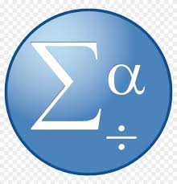

Python Programming
Advanced proficiency in Python for statistical analysis, machine learning, and automation.
Capabilities
I’ve developed these skills in data science and machine learning through coursework and personal projects.
Advanced proficiency in Python for statistical analysis, machine learning, and automation.
Building and evaluating ML models for statistical and applied data problems.
Creating visuals that make findings clear and decision-ready.
Applying visual intelligence techniques for image-based tasks.
Using neural network frameworks to solve complex predictive tasks.
Working with text data for classification, sentiment, and representation learning.
Cleaning and preparing raw data for robust analysis.

